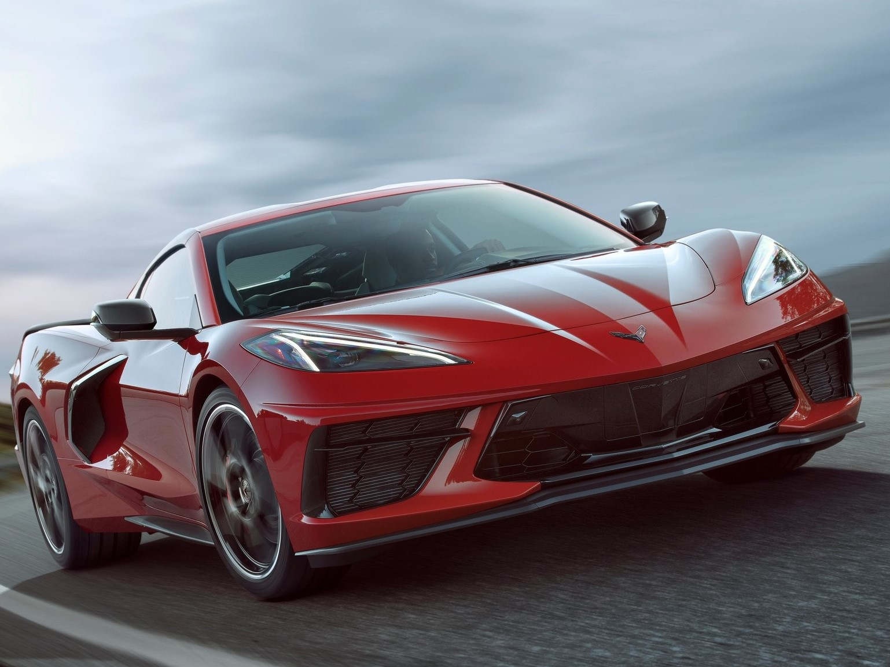

ultimos articulos
10 mejores autos

10 autos mas lujosos

La mejor pagina
El automovil es un invento de Karl Friederich Benz en el año 1886, poco después otros pioneros, como Gattieb y Wilhelm Mayback presentaron sus modelos. En el año 1910 Henry Ford empezó a fabricar automóviles en serie, siendo el primero en hacerlo. Aunque el termino automovil es comúnmente utilizado para referirse a los modelos de turismo (ver mas adelante), existen tambien, otros tipos de automóviles, como lo son: camiones, autobuses, furgonetas, ETC.